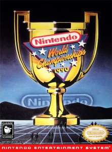
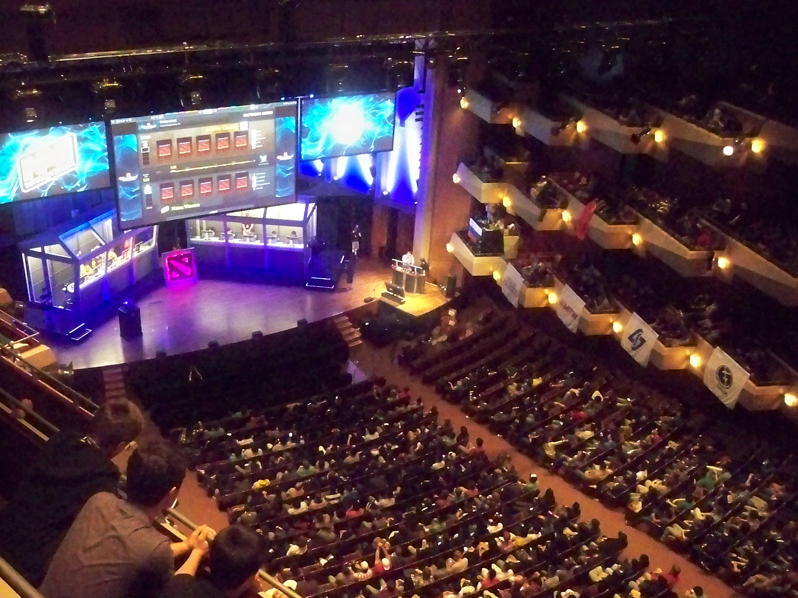

História(){
Games
Por: Ari Junior
Esportes eletrônicos (ou e-sports), como o próprio nome sugere, é um termo para as competições oficiais de videogame, o termo começou a popularizar-se na década de 1990. Países onde o esportes eletrônicos estão mais disseminados entre a população possuem organizações especializadas nessa área. A Coréia do Sul, por exemplo, possui a melhor infra-estrutura e organização de e-sports, além de considerar o gamer profissional como uma profissão desde o ano 2000. Mas as competições de jogos eletrônicos são mais antigas do que muita gente imagina.

Spacewar Olympics
Em 1972, na Universidade de Stanford, aconteceu a primeira competição de videogames conhecida, onde estudantes foram convidados a participar da Intergalactic spacewar olympics, cujo prêmio era um ano de assinatura da revista Rolling Stone. Já em 1981 ocorreu o Space Invaders Championship, o primeiro grande campeonato de videogame, que reuniu mais de dez mil participantes de todo os Estados Unidos.

Nintendo World Championship
Durante a década de 90, com o advento da internet, as competições seguiram o mesmo caminho e começaram a acontecer pela grande rede e, um grande exemplo disso, foram os Nintendo World Championship, que ocorreram durante a década de 1990. Entretanto, foi a partir do ano 2000, graças a modernização das plataformas, o avanço da internet, e o crescente número de pessoas com acesso aos jogos, que os E-Sports cresceram e atingiram proporções globais. Hoje em dia, existem vários torneios regionais e campeonatos mundiais dos mais variados gêneros de jogos, por exemplo, o International, campeonato mundial de Dota 2, onde apenas os melhores times profissionais do mundo competem entre si para ganhar o prêmio, que está acima da casa dos milhões de dólares ou o Campeonato Mundial de StarCraft II, que possui mais de 30 etapas nacionais e continentais. Historicamente, e-sports têm apelado para uma pequena audiência de nicho, com pouca representação nos meios de comunicação de massa, como a televisão. Devido a este fato, a crescente disponibilidade de plataformas de streaming de vídeo on-line, especialmente Twitch, tornou-se central para competições E-Sports atuais, embora na Coréia do Sul alguns campeonatos são transmitidos na televisão. Em 2012, os títulos mais populares destaque em competição profissional foram League of Legends, Dota 2 e StarCraft II.

International 2012
Referências:
}